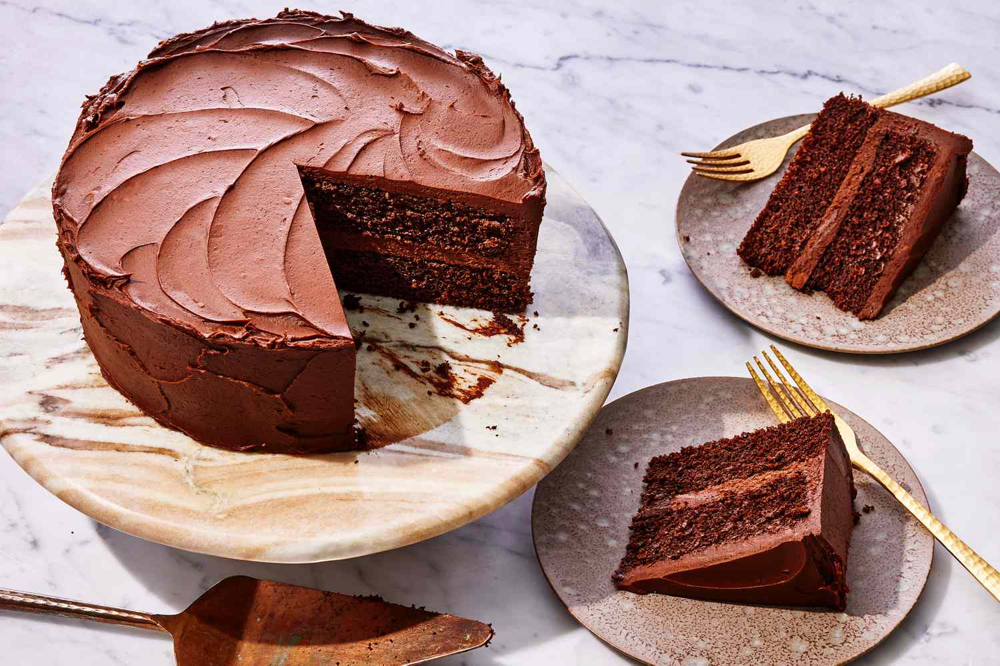

Tejcsokoládé
Üdvözöljük csokoládéparadicsomunkban!
Ezen az oldalon mélyen elmerülhet a csokoládé varázslatos világában. Fedezze fel a csokoládé gyártásának művészetét, és tanuljon meg mindent a kakaóbabok eredetéről és feldolgozásáról. Tekintse meg a különböző csokoládéfajtákat és ízvilágokat, és tudjon meg újat a csokoládé különleges élményéről.
Történelem
16. század
A csokoládé története az ókori maja és azték civilizációkhoz nyúlik vissza, ahol a kakaóbabot értékes valutaként használták, és italokat készítettek belőle. Az aztékok a kakaót a "xocolātl"-ként ismert ital formájában fogyasztották, amelyet keserű ízűnek tartottak. A spanyol hódítók 1519-ben először találkoztak a kakaóval és az aztékok csokoládéitalával, és hazájukba vitték ezt az újdonságot.
17-18. század
Azonban a kakaót és a csokoládét csak fokozatosan kezdték el édesíteni, és Európában a 17. században vált népszerűvé. Az első csokoládégyárak az 18. században nyitottak meg, és a csokoládé egyre szélesebb körben elterjedt luxuscikk lett.
19. század
A 19. század során új gyártási technikák és receptek fejlődtek ki, amelyek lehetővé tették a csokoládé tömegtermelését és elérhetővé tették az átlagemberek számára. A milk chocolate (tejes csokoládé) és a white chocolate (fehér csokoládé) is megjelentek ebben az időszakban.
20. század
A 20. században a csokoládéipar tovább növekedett, és számos csokoládémárka és termék jelent meg a piacon. A csokoládé a világ egyik legkedveltebb édessége lett, és számos kultúrában fontos szerepet játszik az ünnepeken és az élet örömeinek megünneplésében.
Napjainkban
Ma a csokoládé az egyik legnagyobb és legváltozatosabb édességpiacot képviseli, és számos különböző ízű és formájú terméket kínál a fogyasztóknak.
A 3 nagy

Étcsokoládé
Fehércsokoládé
Galéria
